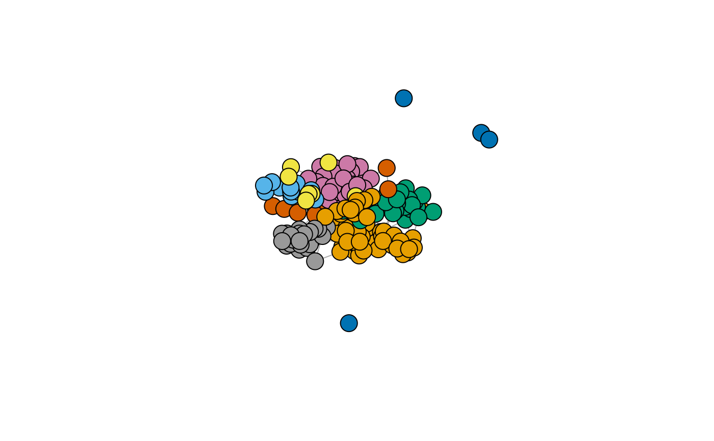

R/frenchblog2007.R
frenchblog2007.RdFrench Political Blogosphere network dataset consists of a single day snapshot of over 200 political blogs automatically extracted the 14 October 2006 and manually classified by the "Observatoire Présidentielle" project. Originally part of the 'mixer' package
frenchblog2007
An igraph object with 196 nodes. The vertex attribute "party" provides a possible clustering of the nodes.
#> [1] "green" "green" "green" "green" "green" #> [6] "green" "green" "right" "right" "right" #> [11] "right" "right" "right" "right" "right" #> [16] "right" "right" "right" "right" "right" #> [21] "right" "right" "right" "right" "right" #> [26] "right" "right" "right" "right" "right" #> [31] "right" "right" "right" "right" "right" #> [36] "right" "right" "right" "right" "right" #> [41] "right" "right" "right" "right" "right" #> [46] "right" "center-rigth" "right" "center-rigth" "center-rigth" #> [51] "center-rigth" "center-rigth" "center-rigth" "center-rigth" "center-rigth" #> [56] "center-rigth" "center-rigth" "center-rigth" "center-rigth" "center-rigth" #> [61] "center-rigth" "center-rigth" "center-rigth" "center-rigth" "center-rigth" #> [66] "center-rigth" "center-rigth" "center-rigth" "center-rigth" "center-rigth" #> [71] "center-rigth" "center-rigth" "center-rigth" "center-rigth" "center-rigth" #> [76] "center-rigth" "center-rigth" "center-rigth" "center-rigth" "left" #> [81] "left" "left" "left" "left" "left" #> [86] "left" "left" "left" "left" "left" #> [91] "left" "left" "left" "left" "left" #> [96] "left" "left" "left" "left" "left" #> [101] "left" "left" "left" "left" "left" #> [106] "left" "left" "left" "left" "left" #> [111] "left" "left" "left" "left" "left" #> [116] "left" "left" "left" "left" "left" #> [121] "left" "left" "left" "left" "left" #> [126] "left" "left" "left" "left" "left" #> [131] "left" "left" "left" "left" "left" #> [136] "left" "center-left" "center-left" "center-left" "center-left" #> [141] "center-left" "center-left" "center-left" "center-left" "center-left" #> [146] "center-left" "center-left" "far-left" "far-left" "far-left" #> [151] "far-left" "far-left" "far-left" "far-right" "liberal" #> [156] "liberal" "liberal" "liberal" "liberal" "liberal" #> [161] "liberal" "liberal" "liberal" "liberal" "far-left" #> [166] "far-right" "far-right" "far-right" "analyst" "analyst" #> [171] "analyst" "analyst" "analyst" "analyst" "analyst" #> [176] "analyst" "analyst" "analyst" "analyst" "green" #> [181] "green" "liberal" "liberal" "liberal" "liberal" #> [186] "liberal" "liberal" "liberal" "liberal" "liberal" #> [191] "liberal" "liberal" "liberal" "liberal" "liberal" #> [196] "liberal"igraph::plot.igraph(frenchblog2007, vertex.color = factor(igraph::V(frenchblog2007)$party), vertex.label = NA )